For my MATH-1001 final project, I will introduce some basic proof structures in an intuitive format, that of overlapping geometric shapes. There are problems with this form of visualization (it can be cumbersome or misleading) but also some great strengths.
While much of the content here might be seen as prerequisites for a theory, I think these results are interesting in their own right. Furthermore, they are self-contained, making them perfect for analysis.
I originally drew up sketches for equivalence and induction as well, but found those to sacrifice too much detail for too little intuition. In lieu of these, I expand on some quantifier logic that benefits greatly from the geometric approach.
Form follows function.
Everything is the set containing everything of interest. I promise this is going somewhere.
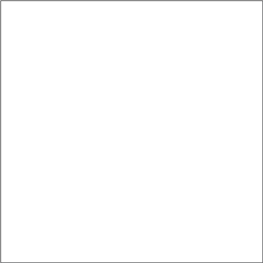
We draw the set A as a circle. I’ve tried other approaches but haven’t found anything that works as well; for inclusions and intersections, circles are the most suggestive of a set. Squiggles look like you’re trying to call attention to them, triangles, squares, and hexagons fail miserably at suggesting intersection, etc.
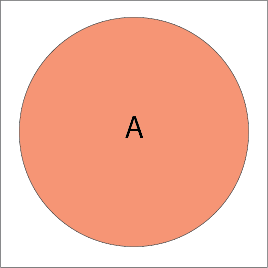
Let’s say we have A as above. We also can describe not A, \({\sim} A\), as everything without A, producing the hole shape below.
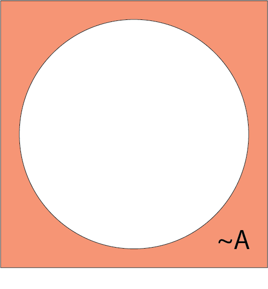
One classic of Venn diagrams is set intersection. Given sets \(A\) and \(B\), their intersection \(A \cap B\) is all of the elements in both set \(A\) and set \(B\). This is depicted as the overlapping area between \(A\) and \(B\).
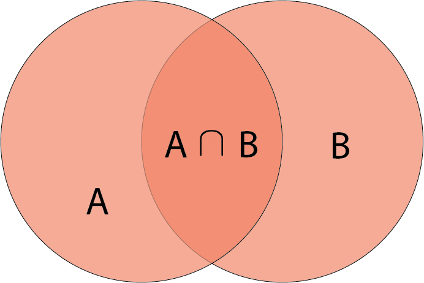
Here, we have the first way to express a statement, the direct proof \(A \rightarrow B\). In every world we have \(A\), we have \(B\). \(B\) encircles \(A\).
Note that there is a difference between \(\cap\), \(\cup\) etc. and \(\rightarrow\). The first examples are description within a world, while the second is a relation about a world.
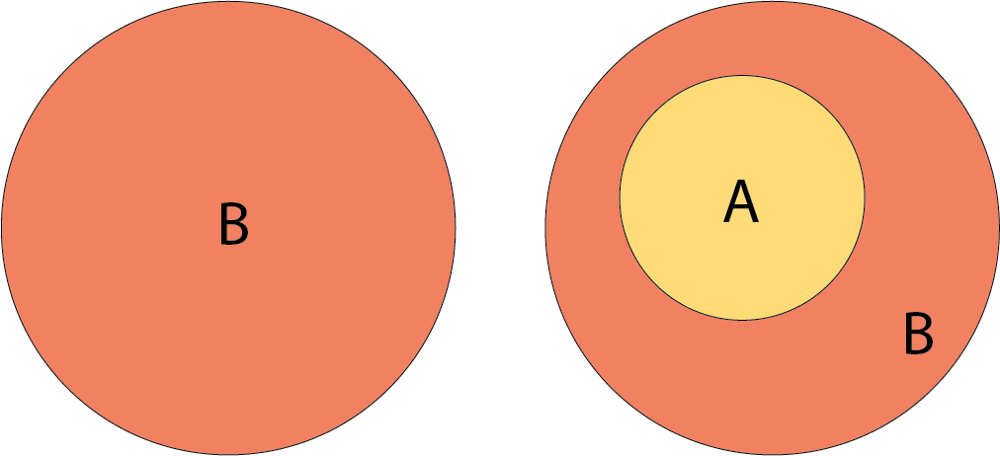
Here are examples of A implies B:
In every world where \(5\) divides \(2x\), \(5\) divides \(x\).
In every world where \(x^2 = 4\), \(x = 2\).
In each, we go from a statement \(A\) to a more general statement \(B\). It is not necessary that \(B \rightarrow A\), however; the two examples above show this.
Here is an explanation for the contrapositive proof. The contrapositive is another way to prove that \(A \rightarrow B\). It says that if we prove that \({\sim} B \rightarrow {\sim} A\), we are really proving the same thing. This does not feel intuitive.
However, we can make it clear with diagrams. If we have the direct proof \(A \rightarrow B\), it is the same as saying that \({\sim} B \rightarrow {\sim} A\). That is, claiming \(B\) encircles \(A\) is really the same as claiming \({\sim}A\) encircles \({\sim}B\). A statement must be claiming something, which is why in each approach we start with the smaller shapes \(A\) and \({\sim} B\). It is our task during the proof to show that this smaller shape is encircled by the larger one.
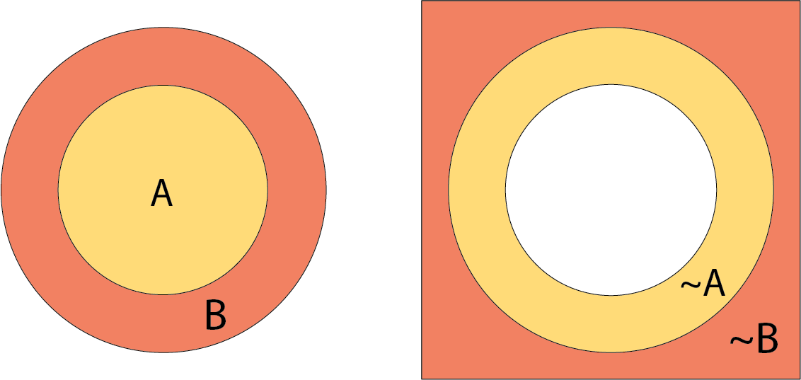
Because defining what something isn’t is the same as defining what it is, our two approaches end up showing the same thing.
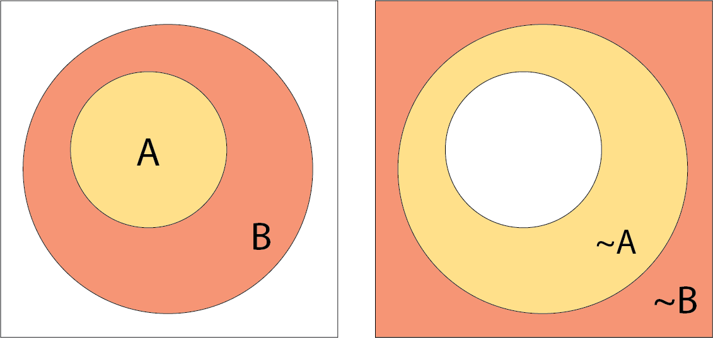
Credit to Natalie Clarius on Linguistics Stack Exchange for the text of some of the examples here.
Here is a case I realized could be described with the same diagrams
as above. In linguistics, all, some, no, most, many ... are
known as quantifiers. Sentences with quantifiers usually assign
relations between two sets, the restriction A and the body B.
When we say All women sang loudly, we are assigning a
relation between those who are women (the restriction A)
and those who sang loudly (the body B).
The terms may be a little confusing. The body of the sentence is
sang loudly because the essential message of the sentence
is that someone sang loudly; hence, it is the body. The
restriction limits those involved to women.
Some quantifiers are known as upward entailing. They are upward
entailing in the restriction (A), and downward entailing in the body
(B). One example is the quantifier all.
all is considered to be upward entailing in the
body, because we may widen \(\equiv\)
loosen the body (going from those who sang loudly, to those who sang).
We have the entailment
All women sang loudly > All women sang
Illustrated, this says that one implication implies another (for convenience, each implication is now a single image, where the smaller shape implies the larger). The implication \(A \rightarrow B\) implies \(A \rightarrow B'\), where \(B'\) is larger:
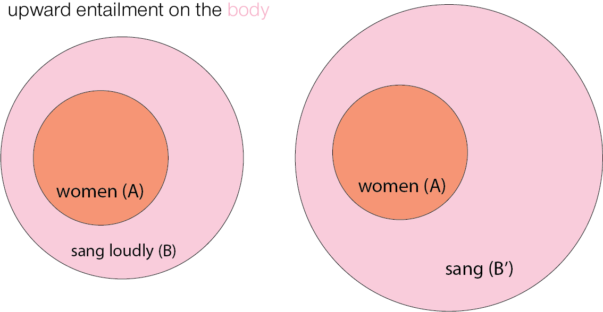
And all is downward entailing in the
restriction, because we may make smaller \(\equiv\) tighten the subject (going from
women, to young women) and still have it be true.
All women sang loudly > All young women sang loudly
We see a different implication \(A \rightarrow B\) implying \(A' \rightarrow B\), where \(A'\) is smaller:
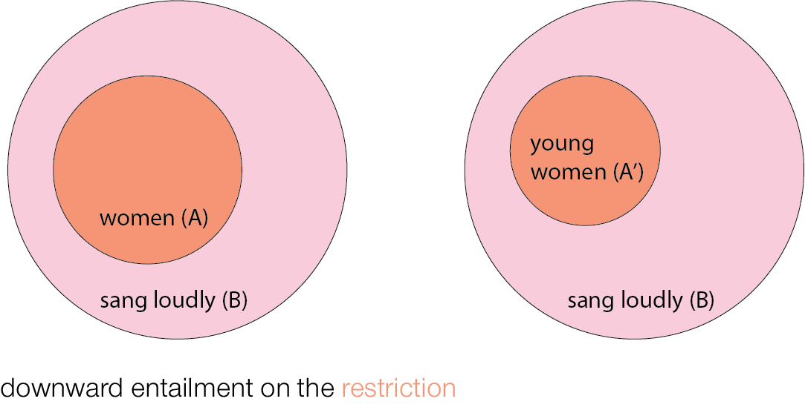
Other quantifiers are known as downward entailing. They are downward
entailing in both the restriction (A) and body (B). One example is the
quantifier no.
Unlike all, no is downward
entailing in the body, because we may make smaller \(\equiv\) tighten the body (going
from those who sang, to those who sang loudly) and still have it be
true. We can see this clearly when we think of the statement
no women sang as \(A \rightarrow
{\sim} B\), where the restriction and body are disjoint. We see
that \(A \rightarrow {\sim} B\) implies
\(A \rightarrow {\sim} B'\), where
\(B'\) is smaller:
No women sang > No women sang loudly
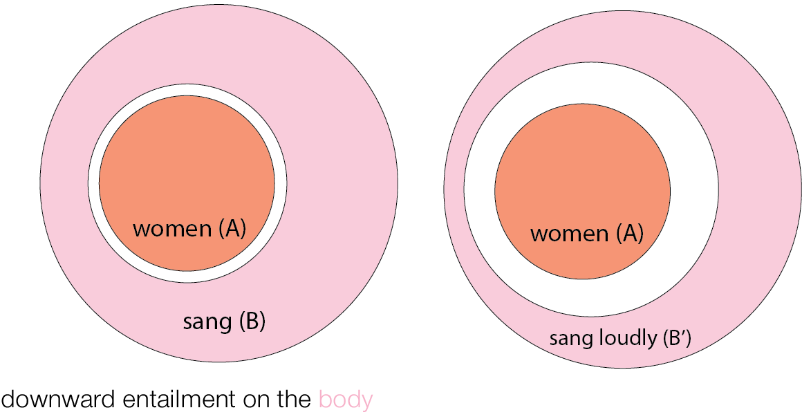
Like all, no is also downward entailing in
the restriction, because we may make smaller \(\equiv\) tighten the restriction
(going from women, to young women), and still have it be true. We see
that \(A \rightarrow {\sim} B\) implies
\(A' \rightarrow {\sim} B\), where
\(A'\) is smaller:
No women sang > No young woman sang.
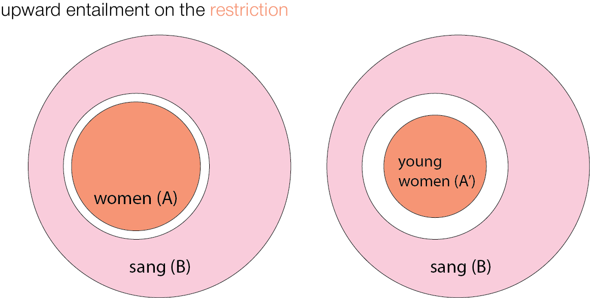
Our diagrams can help us determine exactly how statements with
all and no differ.
In all, the body (B) is inclusive of A: \(A \rightarrow B\).
In no, the body (B) is exclusive of A: \(A \rightarrow {\sim} B\).
Simply by looking at the shapes, we can see that all is
upwards entailing in the body, while no is downwards
entailing in the body.
With all, we cannot tighten the body. In
all women sang loudly, tightening sang loudly
to sang very loudly means that B is no longer inclusive of
A:
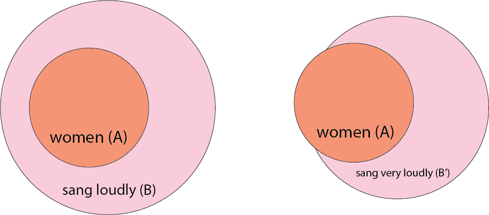
With no, we cannot loosen the body. In
no women sang, widening sang to
made noise means that B is no longer exclusive of A:
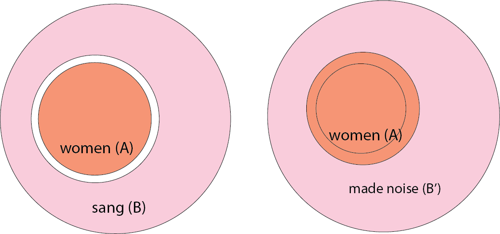
Likewise, we can also see geometrically that both kinds of statements are downward entailing in the restriction.
In all women sang loudly, loosening women
to persons means that (B) is no longer inclusive of A:
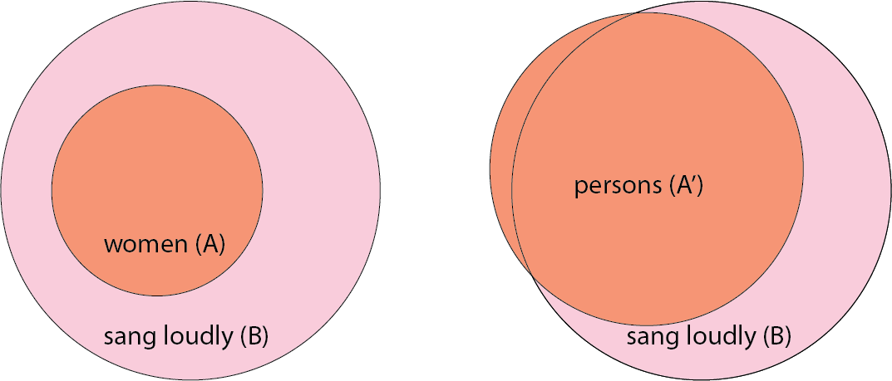
Likewise, in no women sang loudly, loosening
women to persons means that B is no longer
exclusive of A:
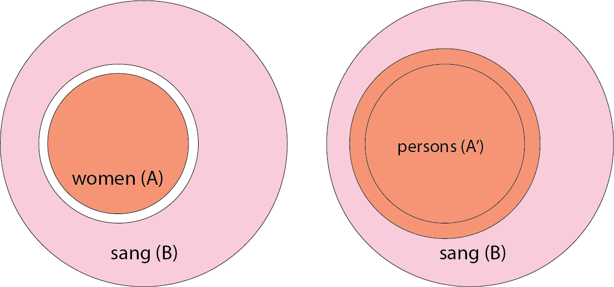
Like the contrapositive, proof by contradiction directly follows the direct proof. In every world where we don’t have the direct implication \(A \rightarrow B\), we must have \(A \rightarrow {\sim}B\). Our task is to show that this ends up as \(C \land {\sim} C\), which is impossible. Thus, we must have \(A \rightarrow B\).
We want to show that \(A \rightarrow B\) must be the case. That is, in every world we have \(A\), we have \(B\).
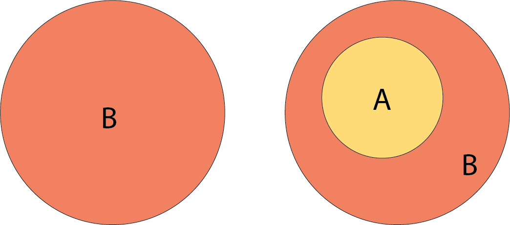
So we assume \(A \rightarrow {\sim}B\).
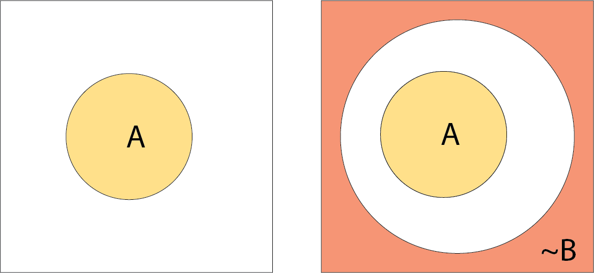
Now, we show that \(A \rightarrow {\sim}B\) leads to \(C \rightarrow {\sim}C\):
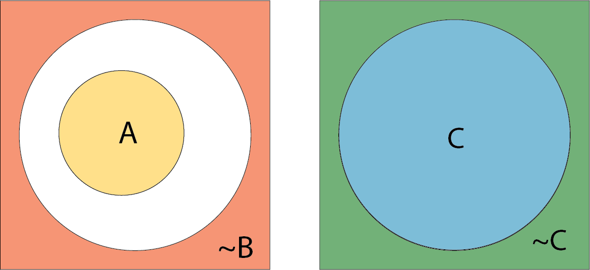
This is a contradiction. It is true that we have previously seen examples of disjoint shapes. But here, to claim that \(C \rightarrow {\sim} C\) is to say that C is contained in \({\sim} C\)! This is definitely impossible. Because in every world in which we have \(A \rightarrow {\sim} B\), we reach \(C \rightarrow {\sim} C\), we must have \(A \rightarrow B\) instead.
This is less satisfying than showing the contrapositive, because it is not as clear how we would go from \(A \rightarrow {\sim}B\) to \(C \rightarrow {\sim}C\). However, it does provide intuition about why we cannot have \(C \rightarrow {\sim}C\): a set can never be contained by its complement.
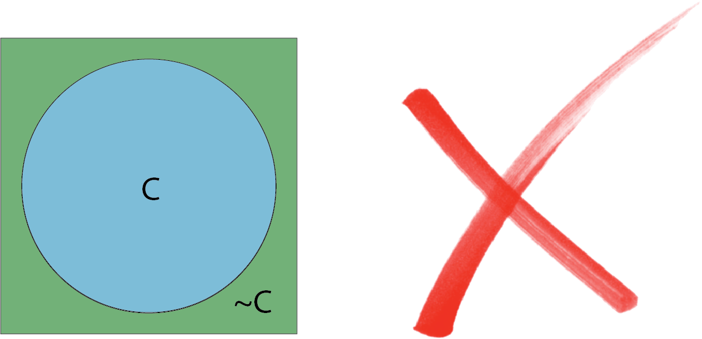
We can say A \(\leftrightarrow B\) to mean \(A \rightarrow B\) and \(B \rightarrow A\) at the same time.
If we have both \(A \rightarrow B\) and \(B \rightarrow A\), we must have A contained by B and B contained by A. This is impossible … unless A and B are the same! This is same rationale for proving equality by double set inclusion.
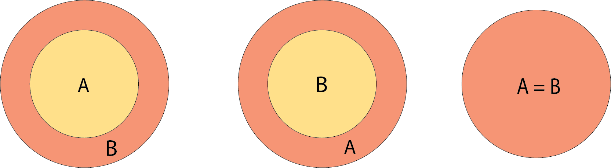